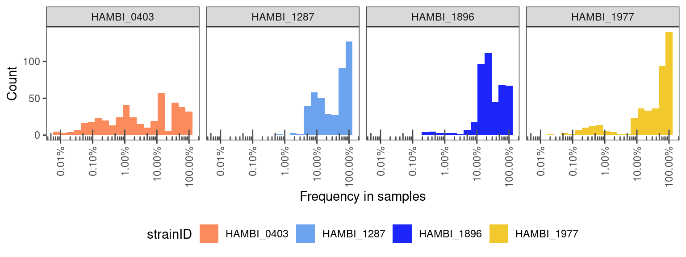

Formatting Rbec output
1 Introduction
Contains results from pairs of all streptomycin concentrations and trios for 0 streptomycin from Milla’s bottom up community assembly experiment
2 Setup
2.1 Libraries
2.2 Global variables
data_raw <- here::here("_data_raw", "20240711_BTK_illumina_v3")
data <- here::here("data", "20240711_BTK_illumina_v3")
amplicontar <- here::here(data_raw, "rbec_output.tar.gz")
# make processed data directory if it doesn't exist
fs::dir_create(data)
# create temporary location to decompress
tmpdir <- fs::file_temp()2.3 Data
NOTE! We have commented out the species not included in this experiment
tax_locus_copynum <- tibble::tribble(
~strainID, ~rRNA16S_cn, ~rRNA16S_locus, ~genus, ~species,
"HAMBI_0006", 7L, "H0006_04757", "Pseudomonas", "putida",
"HAMBI_0097", 7L, "H0097_00044", "Acinetobacter", "johnsonii",
"HAMBI_0097", 7L, "H0097_02759", "Acinetobacter", "johnsonii",
"HAMBI_0097", 7L, "H0097_01762", "Acinetobacter", "johnsonii",
"HAMBI_0105", 4L, "H0105_02306", "Agrobacterium", "tumefaciens",
"HAMBI_0262", 3L, "H0262_00030", "Brevundimonas", "bullata",
"HAMBI_0403", 9L, "H0403_00517", "Comamonas", "testosteroni",
"HAMBI_0403", 9L, "H0403_00522", "Comamonas", "testosteroni",
"HAMBI_1279", 7L, "H1279_03627", "Hafnia", "alvei",
"HAMBI_1279", 7L, "H1279_00125", "Hafnia", "alvei",
"HAMBI_1279", 7L, "H1279_03957", "Hafnia", "alvei",
"HAMBI_1287", 7L, "H1287_03997", "Citrobacter", "koseri",
"HAMBI_1287", 7L, "H1287_03402", "Citrobacter", "koseri",
"HAMBI_1292", 7L, "H1292_03239", "Morganella", "morganii",
"HAMBI_1299", 8L, "H1299_04293", "Kluyvera", "intermedia",
"HAMBI_1299", 8L, "H1299_01283", "Kluyvera", "intermedia",
"HAMBI_1299", 8L, "H1279_03957", "Kluyvera", "intermedia",
"HAMBI_1842", 4L, "H1842_01650", "Sphingobium", "yanoikuyae",
"HAMBI_1896", 4L, "H1896_00963", "Sphingobacterium", "spiritivorum",
"HAMBI_1972", 10L, "H1972_00343", "Aeromonas", "caviae",
"HAMBI_1972", 10L, "H1972_03531", "Aeromonas", "caviae",
"HAMBI_1977", 5L, "H1977_00118", "Pseudomonas", "chlororaphis",
"HAMBI_1988", 5L, "H1988_05160", "Chitinophaga", "sancti",
"HAMBI_1988", 5L, "H1988_05152", "Chitinophaga", "sancti",
"HAMBI_1988", 5L, "H1988_05165", "Chitinophaga", "sancti",
"HAMBI_2159", 4L, "H2159_01406", "Trinickia", "caryophylli",
"HAMBI_2159", 4L, "H2159_05851", "Trinickia", "caryophylli",
"HAMBI_2160", 3L, "H2160_00530", "Bordetella", "avium",
"HAMBI_2164", 5L, "H2164_03337", "Cupriavidus", "oxalaticus",
"HAMBI_2443", 3L, "H2443_00128", "Paracoccus", "denitrificans",
"HAMBI_2494", 4L, "H2494_03389", "Paraburkholderia", "kururiensis",
"HAMBI_2659", 4L, "H2659_00367", "Stenotrophomonas", "maltophilia",
"HAMBI_2792", 4L, "H2792_00549", "Moraxella", "canis",
"HAMBI_3031", 2L, "H3031_00830", "Niabella", "yanshanensis",
"HAMBI_3237", 6L, "H3237_00875", "Microvirga", "lotononidis",
"HAMBI_1923", 6L, "H1923_00876", "Flavobacterium", "odoratum"
)2.4 Functions
# this function
normalize_by_copy <- function(.data, tlc = tax_locus_copynum){
.data %>%
# join with the copy number data frame. We join by the locus tag so this will add H1279_03957 to HAMBI_1299
dplyr::left_join(tlc, by = join_by(rRNA16S_locus)) %>%
# get total number of mapping reads per species. This aggregates all the difference ASVs per species
dplyr::summarize(count = sum(count), .by = c(sample, strainID, rRNA16S_cn)) %>%
# group by sample
dplyr::group_by(sample) %>%
# calculate a corrected count which is simply the count divided by copy num for each species
# dividide by the sum of count divided by copy num for whole sample multiplied by the total
# number of mapped reads per sample
dplyr::mutate(count_correct = round(sum(count)*(count/rRNA16S_cn)/sum(count/rRNA16S_cn))) %>%
dplyr::ungroup() %>%
dplyr::select(sample, strainID, count, count_correct)
}
# this function replaces missing species counts with zero
completecombos <- function(.data, tlc = tax_locus_copynum, countname = count, remove1923 = TRUE){
# get unique strainIDs
strainID <- unique(tlc$strainID)
# table for assigning genus and species names. Doesn't matter if 1923 is there or not
# because it is filter joined later
tax <- dplyr::distinct(dplyr::select(tlc, strainID, genus, species))
if (remove1923) {
# get unique strainIDs but exclude 1923 if remove1923 is true
strainID <- strainID[strainID != "HAMBI_1923"]
}
dplyr::bind_rows(tibble::tibble(strainID = strainID, sample = "dummy"), .data) %>%
dplyr::mutate( "{{ countname }}" := dplyr::if_else(sample == "dummy", 1, {{ countname }})) %>%
tidyr::complete(sample, strainID) %>%
dplyr::filter(sample != "dummy") %>%
dplyr::mutate( "{{ countname }}" := dplyr::if_else(is.na({{ countname }}), 0, {{ countname }})) %>%
tidyr::replace_na(list(count_correct = 0)) %>%
dplyr::left_join(dplyr::distinct(dplyr::select(tlc, strainID, genus, species))) %>%
dplyr::relocate(genus, species, .after = strainID)
}3 Read metadata
Rows: 736 Columns: 8
── Column specification ────────────────────────────────────────────────────────
Delimiter: "\t"
chr (4): sample, community_id, community_type, plate_well
dbl (4): n_species, transfers, strep_conc, replicate
ℹ Use `spec()` to retrieve the full column specification for this data.
ℹ Specify the column types or set `show_col_types = FALSE` to quiet this message.Rows: 384 Columns: 4
── Column specification ────────────────────────────────────────────────────────
Delimiter: "\t"
chr (3): community_id, evo_hist, strainID
dbl (1): target_f
ℹ Use `spec()` to retrieve the full column specification for this data.
ℹ Specify the column types or set `show_col_types = FALSE` to quiet this message.4 Read Rbec raw counts tables
4.1 Untar Rbec output tarball
4.2 Setup directory structure
4.3 Read
straintabs <- paste0(samppaths, "/strain_table.txt") %>%
set_names(sampnames) %>%
map_df(
read_tsv,
skip = 1,
col_names = c("rRNA16S_locus","count"),
show_col_types = FALSE,
.id = "sample") %>%
# naming scheme inconsistent for one sample
mutate(sample = if_else(sample == "P2_s_0", "P02_s_0", sample))5 Format
Normalize counts by 16S copy number
Warning in dplyr::left_join(., tlc, by = join_by(rRNA16S_locus)): Detected an unexpected many-to-many relationship between `x` and `y`.
ℹ Row 1826 of `x` matches multiple rows in `y`.
ℹ Row 19 of `y` matches multiple rows in `x`.
ℹ If a many-to-many relationship is expected, set `relationship =
"many-to-many"` to silence this warning.6 Analysis
6.1 Negative controls
First, we’ll check whether the experimental and plate negative controls look good
finaltable %>%
filter(str_detect(community_type, "^neg|pos")) %>%
summarize(tot = sum(count_correct), .by = c("sample", "community_id", "n_species", "community_type", "replicate"))This looks ok, but there are potentially some problems. Specifically, negative control replicates 2, 3, and 4 all have some contamination. neg_2_0 seems to be contaminated with HAMBI_1977, neg_3_0 with HAMBI_1287, and neg_4_0 with HAMBI_1977. However in the 5 remaining negative controls there is no contamination.
6.2 Positive controls
finaltable %>%
filter(str_detect(community_type, "^pos")) %>%
mutate(total_pos_controls = n_distinct(sample)) %>%
group_by(sample) %>%
mutate(n_sp_detected = sum(count > 0)) %>%
distinct(sample, n_sp_detected, total_pos_controls)This is also good - we detect all 4 species in the positive controls on each plate.
6.3 Misassigned reads
These libraries were only prepared with samples from Milla’s 4-species experiment with 403, 1287, 1896, and 1977 so any time species other than these show up is just an incorrect assignment by Rbec. Let’s check quickly how many of these there are…
There is one or two incorrectly assigned reads here and there but this is just noise. We can safely exclude all reads not mapping to one of the focal species.
6.4 Samples with too few reads
Some of the experimental pairs had streptomycin concentrations higher than any of the species individually could tolerate. We would naively expect then that neither species would grow successfully in these samples and that the overall biomass would be very low, thus resulting in a low number of recovered reads from these samples.
To look into this. first let’s check which samples have very low OD600 in the endpoint samples.
od <- read_tsv(here::here("_data_raw", "2024060606_optical_density", "optical_density_formatted.tsv"))Rows: 2880 Columns: 6
── Column specification ────────────────────────────────────────────────────────
Delimiter: "\t"
chr (1): community_id
dbl (5): transfers, n_species, strep_conc, replicate, OD
ℹ Use `spec()` to retrieve the full column specification for this data.
ℹ Specify the column types or set `show_col_types = FALSE` to quiet this message.filtids <- finaltable %>%
summarize(tot = sum(count_correct), .by = c(sample, community_id, n_species, transfers, strep_conc, replicate)) %>%
left_join(od, by = join_by(community_id, n_species, transfers, strep_conc, replicate)) %>%
filter(transfers == 8) %>%
arrange(tot) %>%
arrange(OD) %>%
filter(OD < 0.1 | tot < 1000) %>%
pull(sample)We’ll filter out samples with an OD of less than 0.1 and also samples with fewer than 1000 reads. It is genearlly good practice to exclude samples with low number of reads.
6.5 Masterplate samples
To set up this experiment, Milla combined the species in the planned proportions on a masterplate. Because this process was time consuming, the masterplate was stored at -80C after construction until the experiment start day when it was taken from the freezer and used to inoculate the experiment. Because Milla knows exactly which strains were added to the master plate and the plates were not allowed to grow, any strains in these samples that are not supposed to be there should be due to Illumina index cross talk and not true contamination. We can get a sense for the average index crosstalk rate from these samples and then draw a threshold of when to exclude likely false positives and when a positive is likely due to contamination.
Here we focus on masterplate samples with species that should not be there. We exclude species that were inoculated and plot the distribution of percentages of those species
masterplate %>%
# here we take advantage of the fact that for species not supposed to be in a sample
# the prior left_join will have filled the evo_hist category with an NA. We can then filter
# on this NA value
filter(is.na(evo_hist)) %>%
filter(f > 0) %>%
ggplot(aes(x = f)) +
geom_histogram(aes(fill = strainID), bins = 20) +
geom_vline(xintercept = 0.01, linetype = "dashed") +
scale_fill_manual(values = hambi_colors) +
scale_x_continuous(trans = "log10", labels = percent, guide = guide_axis(angle=90)) +
labs(x = "Crosstalk frequency", y = "Count") +
facet_grid(~strainID) +
annotation_logticks(sides = "b", color="grey30") +
theme_bw() +
theme(panel.grid = element_blank(),
legend.position = "bottom")
Generally, the cross talk frequency is pretty OK. For 3/4 species it is 1% or less which is more or less what you can expect when you are multiplexing libraries on an Illumina platform. Values greater than 1% are potentially indicative of a different problem, so 1977 requires a bit more investigation.
sids <- masterplate %>%
filter(is.na(evo_hist)) %>%
filter(f > 0.01 & strainID == "HAMBI_1977") %>%
pull(sample)
masterplate %>%
filter(sample %in% sids) %>%
dplyr::select(sample, strainID, count_correct, replicate, evo_hist, target_f, f)It looks like all the “problematic” samples come from plates 7 and 8 in the library prep. Plate 8 only contains the masterplate samples from trios whereas plate 7 contains both masterplate and experimental samples. Figure 2 shows that HAMBI-1977 is very abundant in many of the samples so likely the “leaky” reads come disproportionately from HAMBI-1977 which is why its crosstalk threshold may be higher (Figure 1).
finaltable %>%
group_by(sample) %>%
mutate(f = count_correct/sum(count_correct)) %>%
ungroup() %>%
# here we take advantage of the fact that for species not supposed to be in a sample
# the prior left_join will have filled the evo_hist category with an NA. We can then filter
# on this NA value
filter(!is.na(evo_hist)) %>%
filter(f > 0) %>%
ggplot(aes(x = f)) +
geom_histogram(aes(fill = strainID), bins = 20) +
scale_fill_manual(values = hambi_colors) +
scale_x_continuous(trans = "log10", labels = percent, guide = guide_axis(angle=90)) +
labs(x = "Frequency in samples", y = "Count") +
facet_grid(~strainID) +
annotation_logticks(sides = "b", color="grey30") +
theme_bw() +
theme(panel.grid = element_blank(),
legend.position = "bottom")
Anyway, I don’t think this is a problem and that we can move forward with these samples. However, to defined extinction/competitive exclusion we may need to use a higher threshold than 1% (e.g., 3% frequency) because over 3% we can reliably say that a species is present and it is not due to index cross talk.
6.6 Experimental samples
Now we need to see how our experimental samples performed and if there are species present in them that shouldn’t be there
exp_contam <- finaltable %>%
filter(str_detect(community_type, "experiment")) %>%
group_by(sample) %>%
mutate(f = count_correct/sum(count_correct)) %>%
ungroup() %>%
# because we set 3% as our limit of detection we set read counts of species
# less than 1% to 0
mutate(count_correct_thresh = if_else(f <= 0.03, 0, count_correct)) %>%
group_by(sample) %>%
mutate(f = count_correct_thresh/sum(count_correct_thresh)) %>%
ungroup()exp_contam %>%
filter(is.na(evo_hist)) %>%
ggplot(aes(x = f)) +
geom_histogram(aes(fill = strainID), bins = 20) +
scale_fill_manual(values = hambi_colors) +
scale_x_continuous(trans = "log10", labels = percent, guide = guide_axis(angle=90)) +
labs(x = "Frequency in samples", y = "Count") +
facet_grid(~ strainID) +
annotation_logticks(sides = "b", color="grey30") +
theme_bw() +
theme(panel.grid = element_blank(),
legend.position = "bottom")Warning in scale_x_continuous(trans = "log10", labels = percent, guide =
guide_axis(angle = 90)): log-10 transformation introduced infinite values.Warning: Removed 783 rows containing non-finite outside the scale range
(`stat_bin()`).
It’s not too bad… but 72 of 566 samples (12.7%) have probably been contaminated because they contain a species that shouldn’t be in the sample (using the 3% relative abundance as a robust threshold for presence/absence).
6.6.1 Contaminated pairs
Taking a closer look at specific experimental samples with contamination.
Here we just select samples that have > 3% of a species that shouldn’t be there and prepare them for plotting.
contamsampid <- exp_contam %>%
filter(f > 0) %>%
filter(is.na(evo_hist)) %>%
pull(sample)
spcols <- c("HAMBI_0403_anc" = "#faa019",
"HAMBI_0403_evo" = "#bd7811",
"HAMBI_1287_anc" = "#75afff",
"HAMBI_1287_evo" = "#476c9e",
"HAMBI_1896_anc" = "#59cc4e",
"HAMBI_1896_evo" = "#31752a",
"HAMBI_1977_anc" = "#ffd430",
"HAMBI_1977_evo" = "#ab8e1f",
"HAMBI_0403_NA" = "#e6e5e3",
"HAMBI_1287_NA" = "#bdbcbb",
"HAMBI_1896_NA" = "#8c8c8b",
"HAMBI_1977_NA" = "#333333"
)
exp_contam_plot <- exp_contam %>%
filter(sample %in% contamsampid) %>%
mutate(sp = paste0(strainID, "_", evo_hist))exp_contam_plot %>%
filter(n_species == 2) %>%
ggplot() +
geom_col(aes(x = sample, y=f, fill = sp)) +
facet_wrap( ~ strep_conc, scales = "free_x", ncol = 2) +
labs(y = "Abundance", x = "", fill = "") +
scale_fill_manual(values = spcols) +
scale_y_continuous(labels = percent) +
scale_x_discrete(guide = guide_axis(angle=90)) +
theme_bw() +
theme(panel.grid = element_blank(),
legend.position = "right")
I think pretty much the only way to deal with this is to inspect manually. Most of the comtaminated samples are in the 0 Streptomycin conditions. I think we should exclude samples where the contamination is very high (over ~50% of the sample) but those with 10% or less contaminant I think can be retained, and I will discard the contaminating sequences.
6.6.2 Contaminated trios
Now we’ll do the same thing and inspect the trios.
exp_contam_plot %>%
filter(n_species == 3) %>%
ggplot() +
geom_col(aes(x = sample, y=f, fill = sp)) +
labs(y = "Abundance", x = "", fill = "") +
scale_fill_manual(values = spcols) +
scale_y_continuous(labels = percent) +
scale_x_discrete(guide = guide_axis(angle=90)) +
theme_bw() +
theme(panel.grid = element_blank(),
legend.position = "right")
Again, I think we should exclude samples where the contamination is very high (over ~50% of the sample) but those with around 10% or less contaminant I think can be retained, and I will discard the contaminating sequences.
notcontamtrios <- c("T01_2_0", "T02_2_0", "T04_2_0", "T05_2_0", "T13_2_0",
"T14_2_0", "T15_1_0", "T15_2_0", "T16_1_0", "T16_2_0",
"T17_2_0", "T18_2_0","T31_2_0", "T45_1_0", "T45_2_0",
"T55_1_0", "T61_1_0", "T61_2_0", "T64_1_0", "T64_2_0")
contamtrios <- setdiff(contamsampid[grepl("^T", contamsampid)], notcontamtrios)7 Export
7.1 pos/neg control samples
Separate out the pos/neg control samples
7.2 Pairs
separate, format, and write the pair samples
pairs <- finaltable %>%
filter(!str_detect(community_type, "^pos|^neg")) %>%
filter(n_species == 2) %>%
filter(sample %nin% contampairs) %>%
group_by(sample) %>%
mutate(f = count_correct/sum(count_correct)) %>%
ungroup() %>%
# because we set 3% as our limit of detection we set read counts of species
# less than 1% to 0
mutate(count_correct_thresh = if_else(f <= 0.03, 0, count_correct)) %>%
# also exclude any remaining counts from species that shouldnt be there
# using again the fact that evo_hist should be NA for these species
filter(!is.na(evo_hist)) %>%
group_by(sample) %>%
mutate(f = count_correct_thresh/sum(count_correct_thresh)) %>%
ungroup() %>%
dplyr::select(sample, strainID, evo_hist, count_correct, count_correct_thresh,
f, target_f, replicate, strep_conc, transfers, n_species, community_type, plate_well)
write_tsv(pairs, here::here(data, "pairs_counts.tsv"))7.3 Trios
trios <- finaltable %>%
filter(!str_detect(community_type, "^pos|^neg")) %>%
filter(n_species == 3) %>%
filter(sample %nin% contamtrios) %>%
group_by(sample) %>%
mutate(f = count_correct/sum(count_correct)) %>%
ungroup() %>%
# because we set 3% as our limit of detection we set read counts of species
# less than 1% to 0
mutate(count_correct_thresh = if_else(f <= 0.03, 0, count_correct)) %>%
# also exclude any remaining counts from species that shouldnt be there
# using again the fact that evo_hist should be NA for these species
filter(!is.na(evo_hist)) %>%
group_by(sample) %>%
mutate(f = count_correct_thresh/sum(count_correct_thresh)) %>%
ungroup() %>%
dplyr::select(sample, strainID, evo_hist, count_correct, count_correct_thresh,
f, target_f, replicate, strep_conc, transfers, n_species, community_type, plate_well)
write_tsv(trios, here::here(data, "trios_counts.tsv"))